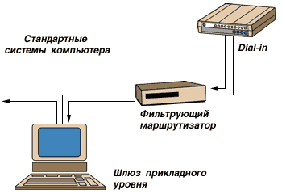
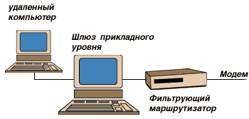
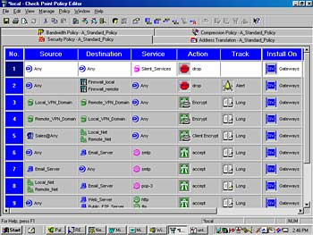
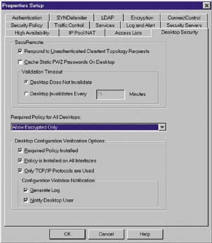
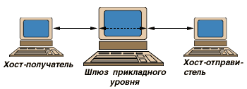
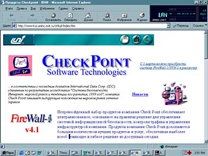
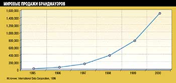
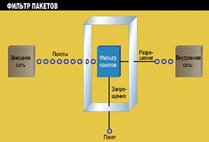
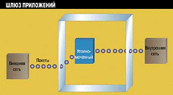
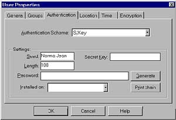

Владимир Красавин
Все больше людей, купив компьютер с модемом для решения задач различного вида, отваживаются на подключение своих новеньких компьютеров к глобальной сети Internet, не подозревая о проблемах ее безопасности. Применяя компьютеры, имеющие выход в Internet, в коммерческих целях, а, главное, при передаче и хранении информации, содержащей сведения конфиденциального характера, вы очень рискуете.
Ежегодные потери, связанные с компьютерными преступлениями в глобальной Сети, оцениваются сотнями миллионов долларов. Поэтому использование локальных компьютеров как для передачи и хранения информации, содержащей коммерческую или личную тайну, так и для работы в Internet, требует построения эффективной системы защиты.
Однако создание слишком мощной, а, следовательно, очень дорогой системы защиты ведет к неэффективному использованию материальных ресурсов и снижению производительности системы в целом из-за ее высокой сложности. Проще говоря, компьютер будет сильно "тормозить".
Полностью защитить информацию на удаленном компьютере практически невозможно из-за появления новых типов угроз в компьютерных сетях. Значит, необходим постоянный анализ и достаточно частое обновление систем обеспечения информационной безопасности на локальном компьютере. Сегодня мы рассмотрим проблемы, связанные с использованием удаленного (модемного) доступа, а также пути решения задачи обеспечения безопасности компьютера, имеющего выход в Internet, при помощи межсетевого экрана, который чаще называют firewall.
Доступ при помощи модема является потенциально опасным и может свести на нет всю систему защиты. Злоумышленник может попытаться проникнуть в удаленный компьютер, даже, не выходя из дома. Через Internet нарушитель может получить пароли, адреса серверов, а иногда и их содержимое, незаконно скопировать важную и ценную для владельца информацию, вторгнуться на удаленный компьютер и получить несанкционированный доступ к личной информации.
Поскольку цель статьи - помощь пользователю в обеспечении информационной безопасности на его собственном удаленном (по отношению к Internet) компьютере, то имеет смысл сначала рассмотреть, что же это такое - межсетевой экран, а затем и принципы его функционирования.
Межсетевой экран - это набор связанных между собой программ, располагающихся на компьютере, который размещает ресурсы владельцев и защищает их от пользователей из внешней сети. Владелец компьютера, имеющего выход в Internet, устанавливает межсетевой экран, чтобы предотвратить получение посторонними конфиденциальных данных, хранящихся на защищаемом компьютере, а также для контроля за внешними ресурсами, к которым имеют доступ другие пользователи данного компьютера. Например, вы понимаете, что некоторые сетевые службы небезопасны с точки зрения компьютерной защиты информации, а другие члены вашей семьи могут этого не понимать.
В основном межсетевые экраны работают с программами маршрутизации и фильтрами всех сетевых пакетов, чтобы определить, можно ли пропустить данный информационный пакет и если можно, то отправить его точно по назначению к компьютерной службе. Для того чтобы межсетевой экран мог сделать это, ему необходимо определить набор правил фильтрации. Главная цель систем межсетевого экранирования - это контролирование удаленного доступа внутрь или изнутри защищаемого компьютера. Основными устройствами удаленного доступа являются модемы. Управлять безопасностью подключений с помощью модемов будет намного легче, если сосредоточиться на проверке и оценке всех соединений, а затем осуществлять допустимые соединения с ответственными компьютерными службами (TELNET, FTP).
Пользователь через модем соединяется с модемным пулом провайдера, чтобы затем с его помощью осуществить необходимые соединения (например, с помощью протокола TELNET) с другими системами в мировой сети. Некоторые межсетевые экраны содержат средства обеспечения безопасности и могут ограничивать модемные соединения с некоторыми системами или потребовать от пользователей применения средств аутентификации.

Рис. 1. То, что вы видите - это не набор отдельно взятых аппаратных средств, а программно-реализованный алгоритм. Управлять безопасностью подключений с помощью модемов будет намного легче, если сосредоточиться на проверке и оценке всех соединений, а затем произвести допустимые соединения с ответственными компьютерными службами (TELNET, FTP). Стандартное размещение модема и межсетевого экрана на компьютере заставляет модемные соединения осуществляться через систему firewall, т. е. сначала происходит модемное соединение, а затем функции обеспечения безопасности принимает на себя межсетевой экран.
На рис. 1 показан модем и межсетевой экран. Поскольку к соединениям с модемами нужно относиться с тем же подозрением, что и к соединениям с Internet, то стандартное размещение модема и межсетевого экрана на компьютере заставляет модемные соединения осуществляться через систему firewall, т.е. сначала происходит модемное соединение, а затем межсетевой экран принимает на себя функции обеспечения безопасности.
Межсетевой экран по представленной схеме реализует довольно-таки безопасный метод управления модемами. Если компьютер использует для защиты модемного доступа средства аутентификации, то он должен строго придерживаться политики, предоставляющей подключение к модемам любого пользователя. Даже если модемы обладают свойствами безопасности, это усложняет схему защиты с помощью межсетевого экрана, и тем самым добавляет в цепь обеспечения безопасности еще одно слабое звено.
Так как другого пути в сеть, кроме как через модем и межсетевой экран нет, то при помощи проверки и оценки подключений обеспечивается выполнение политики доступа к компьютеру. Межсетевой экран в нашем случае является программой, установленной на персональном компьютере специально для того чтобы защищать компьютер от протоколов и служб, которые злоумышленники могли бы использовать для выполнения незаконных действий из мировой сети Internet. Межсетевой экран устанавливается на компьютере таким образом, чтобы не было входящих запросов, которые могли бы получить ресурсы частного компьютера в обход межсетевого экрана (см. рис.2).

Рис.2. На рисунке показана стандартная схема подключения межсетевого экрана на компьютере. На схеме функции фильтра пакетов и шлюза прикладного уровня (уровня приложений) выполняются на двух раздельных устройствах, хотя обычно обе эти функции обеспечиваются одним устройством. Межсетевые экраны можно сравнить с <бутылочным горлышком> между модемами и стандартными системами компьютера.
В компьютере часто происходят сбои, нарушающие управление системой. Поэтому встает вопрос поддержания компьютером некоторого уровня безопасности. Ошибки в обеспечении безопасности становятся общими, взломы чаще происходят не в результате комплекса атак, а из-за простых ошибок в конфигурации системы. Причина может крыться и в недостаточном уровне безопасности паролей. Поэтому для действительной безопасности компьютера требуется система, которая будет обладать всеми необходимыми характеристиками.

Рис.3. Редактор политики безопасности. Firewall обеспечивает надежные средства для выполнения предписанной политики доступа к компьютеру. Фактически межсетевой экран обеспечивает управление доступом пользователей и служб. Таким образом, политика доступа к компьютеру может быть предписана межсетевому экрану, в то время как без firewall защита и безопасность компьютера полностью зависят от профессионализма пользователей.
Firewall может частично решить проблемы, связанные с обеспечением безопасного функционирования компьютеров. Межсетевой экран разрешает работать только тем службам, которым было явно разрешено работать на защищаемом компьютере. В результате компьютер остается незащищенным перед небольшим количеством предварительно разрешенных служб, тогда как все остальные службы запрещены. Firewall также обладает способностью контролировать вид доступа к защищаемому компьютеру. Например, некоторые компьютерные службы могут быть объявлены достижимыми из глобальной сети Internet, в то время как другие могут быть сделаны недоступными. Межсетевой экран может предотвращать доступ ко всем службам, исключая специальные компьютерные сервисы, выполняющие функции доставки почтовых сообщений (SMTP) и функции информационного характера (TELNET, FTP). Для выполнения разграничения доступных служб должна быть описана политика доступа, которую межсетевые экраны проводят с большой эффективностью.
Рис. 4. Фильтрование TELNET и SMTP-пакетов. Пользователь может блокировать модемные соединения, идущие от конкретных адресов тех хостов, которые считаются враждебными или ненадежными. В качестве альтернативы фильтрующий маршрутизатор может заблокировать все возможные соединения, идущие от различных IP-адресов, внешних к вашему компьютеру (с некоторыми исключениями, такими как SMTP для получения электронной почты и TELNET). >
Главное правило при описании политики доступа - это запрещение доступа к службам, которым для работы не требуется доступ из внешней сети. Firewall фактически обойдется и дешевле для пользователей, т. к. все основное и дополнительное программное обеспечение для гарантии безопасности может быть расположено на одном межсетевом экране.
Секретность имеет важное значение для некоторых компьютеров и их владельцев. Даже если информация и не содержит секретных сведений, все равно найдутся данные, полезные для нападающего. Используя firewall, некоторые специалисты по компьютерной безопасности могут блокировать такие службы, как finger и Domain Name Service (DNS).
Система firewall используется также для того, чтобы блокировать DNS-информацию о защищаемом компьютере, и делать это таким образом, чтобы имя и IP-адрес компьютера не были бы доступны злоумышленникам в Internet.
Основные компоненты
Основными компонентами системы firewall являются:
- политика безопасности сети;
- механизм аутентификации;
- механизм фильтрации пакетов;
- шлюзы прикладного уровня.
Следующие разделы описывают некоторые из этих компонентов более подробно.
Политика безопасности
Существует два уровня политики безопасности компьютера, непосредственно влияющие на установку и использование межсетевого экрана. Политика высокого уровня или политика доступа к компьютеру определяет те службы, которые будут допускаться через модем и которым будет запрещено работать на компьютере, она описывает также, как эти службы будут использоваться, и какие условия являются исключениями в этой политике. Политика низкого уровня описывает, как межсетевой экран будет фактически выполнять задачу ограничения доступа и фильтрования служб, которые были определены политикой высокого уровня.

Рис.5. Менеджер безопасности межсетевого экрана FireWall-1 фирмы CheckPoint. Эта система управления межсетевым экраном позволяет настраивать такие полезные свойства, как политику безопасности, аутентификацию, шифрование и многие другие.
Правила доступа к защищаемым ресурсам должны базироваться на одном из следующих принципов:
- разрешать все, что не запрещено в явной форме;
- запрещать все, что не разрешено в явной форме.
|
Межсетевой экран, осуществляющий первый принцип, разрешает по умолчанию всем службам работать на защищаемом компьютере, за исключением тех служб, которые политика доступа к службам отвергает, считая их небезопасными. Firewall, осуществляющий второй принцип, отвергает по умолчанию все службы, но пропускает те службы, которые были определены как безопасные. Этот второй принцип следует из классической модели доступа, используемой во всех областях информационной безопасности. Первая политика модемного доступа менее желательна, так как она предлагает большее количество путей для обхода межсетевого экрана.

Рис. 6. Виртуальное соединение, выполненное шлюзом прикладного уровня. Чтобы противостоять недостаткам, возникающим при фильтровании пакетов фильтрующими маршрутизаторами, межсетевые экраны должны использовать специальные приложения для того чтобы фильтровать пакеты таких служб, как TELNET и FTP. Такие программы называются полномочными серверами, а хосты, на которых они установлены, называются шлюзами прикладного уровня.
Политика доступа к службам - наиболее важный из четырех описанных компонентов межсетевого экрана, установленного на вашем компьютере. Другие три компонента используются, чтобы выполнять и предписывать политику. (И, как отмечено выше, политика доступа к службам должна быть симметрична мощной и всесторонней организации политики безопасности.) Эффективность межсетевого экрана для защиты компьютера зависит от типа используемого межсетевого экрана, процедур межсетевого экранирования и политики доступа к службам.

Фильтрование пакетов
Еще одной важной характеристикой обеспечения удаленного доступа является фильтрование пакетов. Обычно используют фильтрующий маршрутизатор, разработанный специально для фильтрования пакетов, проходящих через маршрутизатор. Фильтрующий маршрутизатор - это чаще всего программа, настроенная так, чтобы по отдельным данным фильтровать пакеты, доставленные модемом. Обычно фильтр проверяет данные, располагающиеся в заголовке пакета, такие, как IP-адрес источника и получателя, некоторые другие.

С выходом в Internet пользователи начинают испытывать потребность в защите своих данных от атак извне. В связи с этим компаниями, продавцами межсетевых экранов, прогнозировался рост числа продаж firewall до 1,5 млн к 2000 г. что в результате и произошло.
Отдельные фильтрующие маршрутизаторы исследуют, с какого сетевого маршрутизатора прибыл пакет, используя затем эту информацию как дополнительный критерий фильтрования. Фильтрование может происходить различными способами: блокировать соединения и с определенными хостами и сетями, и с определенными портами. Пользователь может блокировать соединения, идущие от конкретных адресов тех хостов, которые рассматриваются как враждебные или ненадежные. В качестве альтернативы фильтрующий маршрутизатор может заблокировать все возможные соединения, идущие от различных IP-адресов, внешних к данному компьютеру (с некоторыми исключениями, такими, как SMTP для получения электронной почты).
Решение на фильтрование некоторых протоколов зависит от политики доступа через модем к вашему компьютеру, т. е. - какая служба должна иметь доступ из Internet и какой тип доступа к этой службе можно разрешить.

Фильтры пакетов анализируют приходящие IP-пакеты и пропускают или не пропускают их в зависимости от предопределенного списка правил фильтрации. В целом фильтры пакетов представляют наименее дешевые решения для брандмауэра, но благодаря своему умению проверять пакеты различных протоколов, они являются и наиболее гибкими. Кроме того, фильтры работают быстро, поскольку они просто просматривают информацию о пакете при принятии решения.
В то время как некоторые службы, такие, как TELNET или FTP, по существу небезопасны, то, блокируя модемный доступ к ним в редакторе политики доступа, вы увеличиваете вероятность долгого и нормального функционирования вашего компьютера. Не все системы обычно требуют доступа ко всем службам. Например, ограничивая TELNET или FTP-доступ из Internet, можно улучшить состояние безопасности компьютера. Службы типа NNTP могут казаться безопасными, но ограничение этих служб позволяет создавать более высокий уровень безопасности на компьютере и снижает вероятность применения данной службы при атаке.

Шлюзы приложений следят за пакетами на уровне приложений и инициируют уполномоченный сеанс, а не устанавливают прямое соединение между внешним миром и компьютером. Обнаружив сетевой сеанс, шлюз приложений останавливает его и вызывает уполномоченное приложение для оказания запрашиваемой услуги, допустим TELNET, FTP, World Wide Web или электронная почта.
Фильтрование входящих и исходящих пакетов упрощает правила фильтрования пакетов и дает возможность фильтрующему маршрутизатору более легко определять степень опасности IP-адреса. Фильтрующие маршрутизаторы, не владеющие такой способностью, имеют большое количество ограничений при выполнении стратегии фильтрования. Отвечающие за это фильтрующие маршрутизаторы должны выполнять обе перечисленные выше политики фильтрования.
Шлюз прикладного уровня
Пользователь, который хочет соединиться с каким-либо удаленным компьютером Сети, должен сначала соединиться с межсетевым экраном и только затем с нужной службой требуемого компьютера через шлюз прикладного уровня системы firewall. Шлюз прикладного уровня - это программа, реализующая доступ к требуемым службам. Модемное соединение происходит следующим образом:
- сначала внешний пользователь устанавливает TELNET-соединение со шлюзом прикладного уровня;
- сервер проверяет IP-адрес отправителя и разрешает или запрещает соединение в соответствии с критерием доступа;
- внешнему пользователю может понадобиться доказать свою подлинность (возможно, при помощи одноразовых паролей);
- шлюз прикладного уровня устанавливает TELNET-соединение между ним самим и TELNET-сервером затребованного компьютера;
- шлюз прикладного уровня осуществляет обмен информацией по установленному соединению;
- шлюз прикладного уровня регистрирует соединение.
Шлюз прикладного уровня пропускает только те службы, которые ему разрешено обслуживать. Другими словами, если шлюз прикладного уровня имеет полномочия на обслуживание только FTP и TELNET, то только FTP и TELNET могут быть допущены в защищаемую подсеть, а все другие службы будут полностью блокироваться. Firewall также предотвращает доступ всех оставшихся небезопасных служб. Другая польза от использования шлюза прикладного уровня - это то, что он может фильтровать протоколы. Некоторые межсетевые экраны, например, могут фильтровать FTP-соединения и запрещать использование команд FTP, таких, как put, что гарантирует невозможность записи информации на анонимный FTP-сервер.
Firewall служит маршрутизатором к системе назначения и вследствие этого может перехватывать модемные соединения и затем делать обязательную проверку, например, запрос пароля. В дополнение к TELNET, шлюзы прикладного уровня используются обычно для фильтрования FTP, электронной почты и некоторых других служб.

Аутентификация пользователя. С тех пор как межсетевой экран может централизовать доступ к сети и управлять им, он является логичным местом для установки программного и аппаратного обеспечения усиления аутентификации.
В завершение хотелось бы еще раз подчеркнуть, что компьютеры, имеющие модемный выход в Internet, подвержены значительному риску быть атакованными нарушителями или стать плацдармом для атаки на другие компьютеры. Также хочу отметить, что хотя применение систем межсетевого экранирования позволяет защититься от целого ряда угроз, однако они обладают целым рядом недостатков и, кроме того, существуют угрозы, которым они не могут противостоять. Различные схемы применения межсетевых экранов и модемов предназначаются для обеспечения безопасности компьютеров от угроз определенного вида. Для успешного противодействия угрозам из Internet должны применяться сочетания из основных типов межсетевых экранов, эффективно перекрывающих небезопасные модемные соединения. Системы межсетевого экранирования в настоящее время все же могут служить достаточно надежным барьером для защиты удаленных компьютеров от атак со стороны Internet.